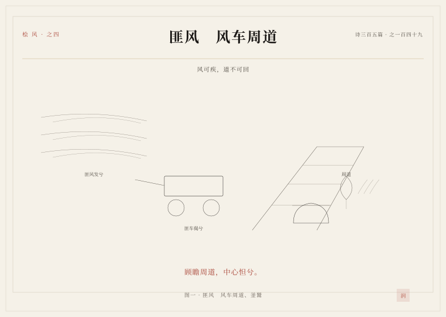
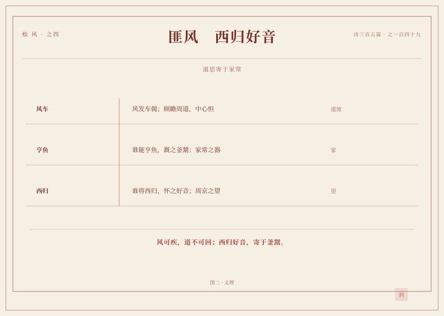

第一百四十九篇 匪风
桧风 · 之四 SJ149
朗读 · 普通话
依经文原文朗读，章次不读出；配古琴底乐，不改速、不加拖腔。全库同一音色（豆包 TTS），非播音员录制。
一 解题
诗三判：
- 谁在说：桧国之人。见风疾车驰，顾瞻周道而心伤；末章以「亨鱼」「釜鬵」起兴，寄望西归之人带来周京好音。
- 说什么事：三章由风、车、周道三物起，落到「中心怛」「中心吊」；再由亨鱼、釜鬵一转，落到「谁将西归，怀之好音」。前二章写道废，末章写道思。
- 为何编在此：桧风末篇。前一篇写人不如草，此篇写人思周道；一国将亡，最后所剩，是对「道」的记忆。
《毛序》：「《匪风》，思周道也。国小政乱，忧及祸难，而思周道焉。」
朱子《诗集传》：「赋也。匪风，匪车，言风与车之疾也。偈，疾貌。周道，适周之道也。怛，伤也。」二章：「飘，疾貌。嘌，无节度也。吊，伤也。」三章：「亨，煮也。溉，涤也。鬵，釜属。西归，归于周也。好音，犹善音，谓信息也。」
本库的看法：《匪风》是一首把「思周道」写成风、车、釜鬵的诗。
毛序说「国小政乱，忧及祸难」，朱子说「思周道」，二说一政一思，其实同指：周道不是一条路，是一套秩序；路坏在心，心坏在政。
须辨：匪风不是「非风」，是「彼风」；匪车不是「非车」，是「彼车」；周道是适周之道，也是周之政道；釜鬵是家常炊具，不是礼器。末章以家常寄大望：一尾鱼、一口锅，便是「好音」的落处。
断语：风可疾，道不可回；西归好音，寄于釜鬵。
先辨五事：「匪」读彼，不是非；「偈」是车疾貌，不是偈语；「周道」是适周之路，也是周政；「亨」读烹，不是亨通；「鬵」是釜属，不是甑。
二 经文
第一章
匪风发兮，匪车偈兮。
顾瞻周道，中心怛兮。
第二章
匪风飘兮，匪车嘌兮。
顾瞻周道，中心吊兮。
第三章
谁能亨鱼，溉之釜鬵。
谁将西归，怀之好音。
三 韵读
- 一章：发、偈、怛，月、祭旁转。声促，如风车骤至。
- 二章：飘、嘌、吊，宵部相叶。转宵，声扬而悲。
- 三章：鱼、鬵、音，鱼、侵旁转。一声家常，一声远方。
读法：前二章韵促而急，末章忽转家常；风车愈疾，釜鬵愈静，好音愈远。
四 字义与名物
- 匪：彼。发：风疾貌。偈：车疾貌。顾瞻：回望。周道：适周之道，亦周之政道。怛：伤。
- 飘：风疾貌。嘌：车行无节度貌。吊：伤。
- 亨：烹。溉：洗涤。釜鬵：釜与鬵，炊器。西归：归于周。好音：善音、信息。
五 今译
一章：那风发发地吹，那车偈偈地驰。回望周道，中心伤怛。
二章：那风飘飘地吹，那车嘌嘌地驰。回望周道，中心伤吊。
三章：谁能烹鱼，先把釜鬵洗净。谁将西归，请带给我周京的好音。
六 章旨
- 一章：风发车偈，是「疾」；顾瞻周道，是「远」；疾在眼前，远在心上。
- 二章：风飘车嘌，是「乱」；中心吊，是「伤」；乱在道路，伤在秩序。
- 三章：亨鱼溉釜，是「家常」；西归好音，是「大望」；以最小之器，寄最大之望。
七 诗教
- 道在路，也在政：周道坏，不只是路坏；顾瞻二字，是回望，也是追问。
- 好音不是闲话：西归之人所带来的，是周京的消息，是一线秩序；家常釜鬵，正见民生之望。
- 小国之声：桧将亡，诗不哭，只问「谁将西归」；问得越轻，痛得越深。
八 分寸与边界
- 不把「匪」读成非：「匪风」「匪车」是彼风彼车；读成否定，则风车皆无。
- 不把「周道」只读成道路：周道是适周之路，也是周之政道；只读成路，则「思周」无着。
- 不把「亨鱼」读成宴饮：亨鱼溉釜是家常炊事，不是宴乐；读成宴饮，则末章之望尽失。
- 不把「西归」坐实为某人：西归是归周，不必指实；所指之人存参，所寄之望可定。
九 存疑
- 诗旨：毛序「思周道」，朱子从之。本库从毛朱，以道废为骨。
- 「匪」：毛传「匪，非也」；朱子「匪风，匪车，言风与车之疾也」。本库从朱读「彼」，于文更顺。
- 「嘌」：一说无节度，一说疾貌。两存。
- 「好音」：一说善音，一说信息。从信息，兼声音。
十 跨典
- 《小雅·大东》「周道如砥，其直如矢」；此篇「顾瞻周道」，一盛一衰，正是周道之变。
- 《论语》「谁能出不由户？何莫由斯道也」；此篇「谁将西归」，同一问道。
- 《桧风》四篇，由君服而民礼而人苦而道思；四篇收尽，桧之亡不在最后一句，在每一句。
十一 双卡与图
六对：
| 匪（彼） |
匪（非） |
| 偈（车疾貌） |
偈（偈语） |
| 周道（适周之路，亦周政） |
周道（普通道路） |
| 亨（烹） |
亨（亨通） |
| 鬵（釜属） |
鬵（甑） |
| 好音（信息／善音） |
好音（好音乐） |

图一 · 匪风 风车周道、釜鬵

图二 · 匪风 西归好音，寄于釜鬵